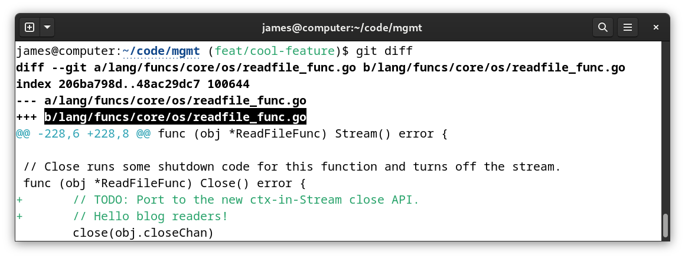
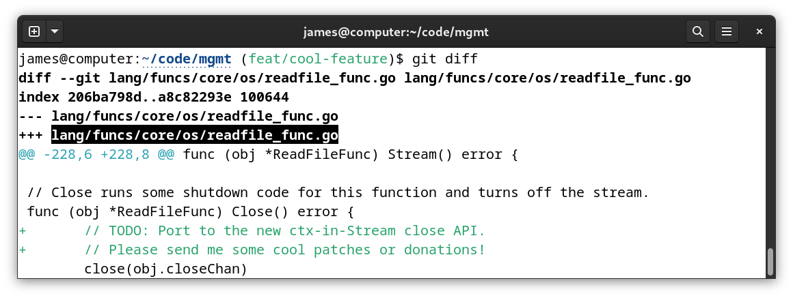

Everyone uses git diff. But there’s that odd annoyance that you’ve probably
seen before but are so used to that you’ve forgotten about it. The a/ and b/
prefixes…
james@computer:~/code/mgmt (feat/cool-feature)$ git diff
diff --git a/lang/funcs/core/os/readfile_func.go b/lang/funcs/core/os/readfile_func.go
index 206ba798d..48ac29dc7 100644
--- a/lang/funcs/core/os/readfile_func.go
+++ b/lang/funcs/core/os/readfile_func.go
@@ -228,6 +228,8 @@ func (obj *ReadFileFunc) Stream() error {
// Close runs some shutdown code for this function and turns off the stream.
func (obj *ReadFileFunc) Close() error {
+ // TODO: Port to the new ctx-in-Stream close API.
+ // Hello blog readers!
close(obj.closeChan)
obj.wg.Wait() // block so we don't exit by the closure of obj.events
close(obj.events)
The git diff command shows these to help you differentiate between the source
and the destination files. In most cases you are in the midst of looking at and
writing code, so you’ll probably instinctively know whether you or something
just added or deleted those lines. (Because if you flipped a and b you’d
have the opposite diff.)
You can customize these with --src-prefix=<prefix> and --dst-prefix=<prefix>.
Even better, I just turn them off with --no-prefix.
Just run:
$ git config --global diff.noprefix true
Alternatively you can add to your ~/.gitconfig directly with:
# turn off the stupid a/ b/ prefixes in `git diff`
[diff]
noprefix = true
james@computer:~/code/mgmt (feat/cool-feature)$ git diff
diff --git lang/funcs/core/os/readfile_func.go lang/funcs/core/os/readfile_func.go
index 206ba798d..a8c82293e 100644
--- lang/funcs/core/os/readfile_func.go
+++ lang/funcs/core/os/readfile_func.go
@@ -228,6 +228,8 @@ func (obj *ReadFileFunc) Stream() error {
// Close runs some shutdown code for this function and turns off the stream.
func (obj *ReadFileFunc) Close() error {
+ // TODO: Port to the new ctx-in-Stream close API.
+ // Please send me some cool patches or donations!
close(obj.closeChan)
obj.wg.Wait() // block so we don't exit by the closure of obj.events
close(obj.events)
If you’re copy+pasting from the terminal, you’d have to manually select the string without the prefix, as by default word barriers select the whole thing. Note the difference:
Before:
|  |
After:
|  |
Unfortunately the diff output in git add -p does not obey the same setting. I
briefly looked at writing a patch for this, but my C skills and knowledge of the
git codebase itself aren’t good enough at the moment. If you could make this
happen or open an issue with the git team, please do!
I hope you enjoyed this. Please leave me a comment if this taught you something new!
It probably took me more time to write this blog post than what I’ll save in copy+paste time cumulatively over the next year, but here we are.
Happy Hacking,
James
You can hire James and his team at m9rx corporation.
You can follow James on Mastodon for more frequent updates and other random thoughts.
You can follow James on Twitter for more frequent updates and other random thoughts.
You can support James on GitHub if you'd like to help sustain this kind of content.
You can support James on Patreon if you'd like to help sustain this kind of content.
Your comment has been submitted and will be published if it gets approved.
Click here to see the patch you generated.
{kind=link}
{kind=link}
Comments
Nothing yet.
Post a comment